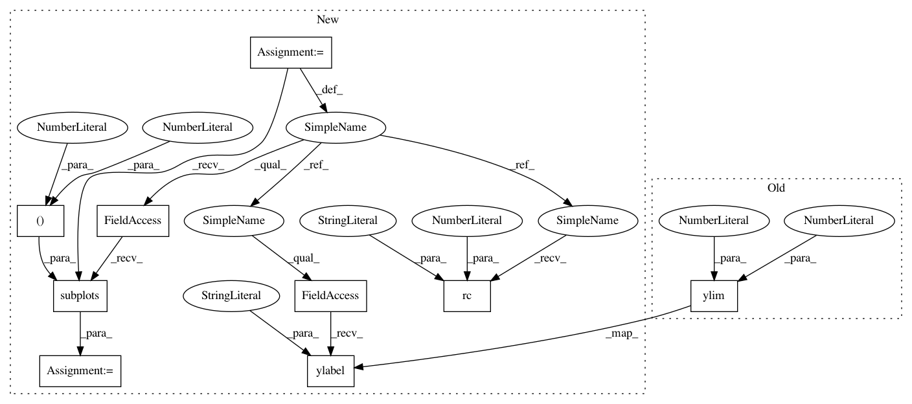

dc017263c99014e5a5d7ed7d2b2faf996c464fb1,book_figures/chapter3/fig_weibull_distribution.py,,,#,37
Before Change
label=r"$k=%.1f,\ \lambda=%i$" % (k, lam))
plt.xlim(0, 5)
plt.ylim(0, 1.0)
plt.xlabel("$x$", fontsize=14)
plt.ylabel(r"$p(x|k,\lambda)$", fontsize=14)
plt.title("Weibull Distribution")
After Change
// Adjust font sizes for text
import matplotlib
matplotlib.rc("font", size=8)
//------------------------------------------------------------
// Define the distribution parameters to be plotted
k_values = [0.5, 1, 2, 2]
lam_values = [1, 1, 1, 2]
linestyles = ["-", "--", ":", "-.", "--"]
mu = 0
x = np.linspace(-10, 10, 1000)
//------------------------------------------------------------
// plot the distributions
fig, ax = plt.subplots(figsize=(5, 3.75))
for (k, lam, ls) in zip(k_values, lam_values, linestyles):
dist = dweibull(k, mu, lam)
plt.plot(x, dist.pdf(x), ls=ls, c="black",
label=r"$k=%.1f,\ \lambda=%i$" % (k, lam))
plt.xlim(0, 5)
plt.ylim(0, 0.6)
plt.xlabel("$x$")
plt.ylabel(r"$p(x|k,\lambda)$")
plt.title("Weibull Distribution")
plt.legend()
plt.show()
In pattern: SUPERPATTERN
Frequency: 5
Non-data size: 9
Instances
Project Name: astroML/astroML
Commit Name: dc017263c99014e5a5d7ed7d2b2faf996c464fb1
Time: 2013-06-08
Author: vanderplas@astro.washington.edu
File Name: book_figures/chapter3/fig_weibull_distribution.py
Class Name:
Method Name:
Project Name: astroML/astroML
Commit Name: dc017263c99014e5a5d7ed7d2b2faf996c464fb1
Time: 2013-06-08
Author: vanderplas@astro.washington.edu
File Name: book_figures/chapter3/fig_gaussian_distribution.py
Class Name:
Method Name:
Project Name: astroML/astroML
Commit Name: dc017263c99014e5a5d7ed7d2b2faf996c464fb1
Time: 2013-06-08
Author: vanderplas@astro.washington.edu
File Name: book_figures/chapter3/fig_fisher_f_distribution.py
Class Name:
Method Name:
Project Name: astroML/astroML
Commit Name: dc017263c99014e5a5d7ed7d2b2faf996c464fb1
Time: 2013-06-08
Author: vanderplas@astro.washington.edu
File Name: book_figures/chapter3/fig_student_t_distribution.py
Class Name:
Method Name:
Project Name: astroML/astroML
Commit Name: dc017263c99014e5a5d7ed7d2b2faf996c464fb1
Time: 2013-06-08
Author: vanderplas@astro.washington.edu
File Name: book_figures/chapter3/fig_weibull_distribution.py
Class Name:
Method Name:
Project Name: astroML/astroML
Commit Name: dc017263c99014e5a5d7ed7d2b2faf996c464fb1
Time: 2013-06-08
Author: vanderplas@astro.washington.edu
File Name: book_figures/chapter3/fig_gamma_distribution.py
Class Name:
Method Name: